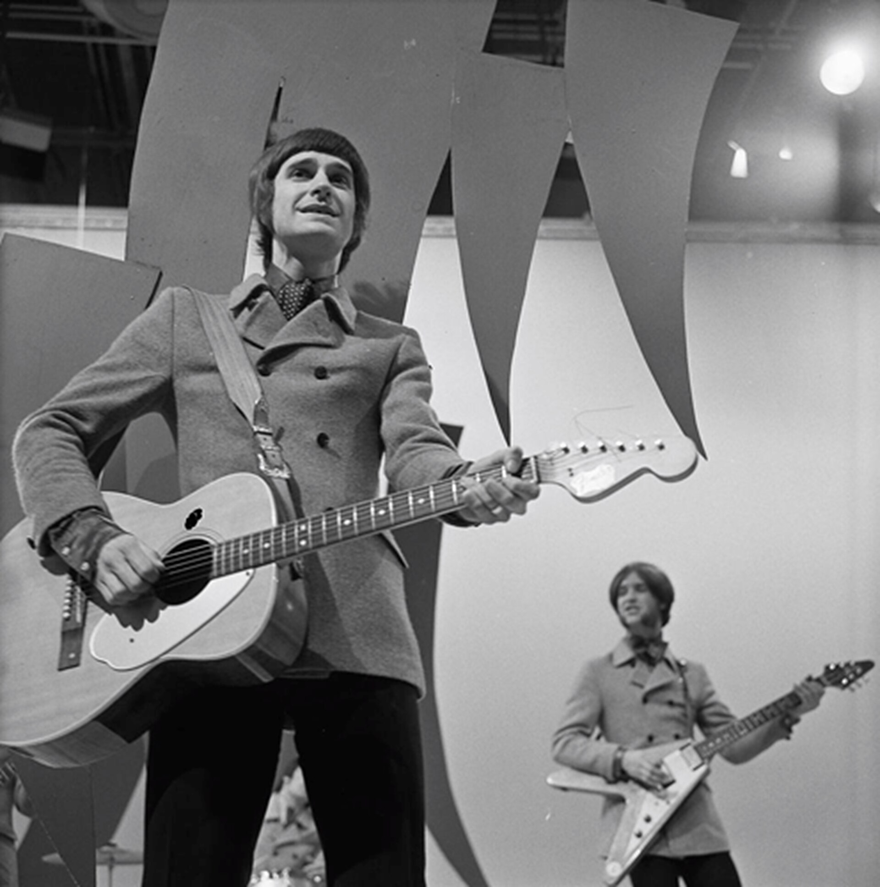

Waterloo Sunset is widely considered the most beautiful song The Kinks ever recorded.
Ray Davies wrote it as a quiet tribute to the Thames and to London.
It was also a farewell to a version of his own life he was already starting to leave behind.

Table of Contents
Writing Waterloo Sunset
Ray Davies carried the melody of Waterloo Sunset in his head for two or three years.
He finally set it down in 1967.
He first called it "Liverpool Sunset," a nod to his own northern roots.
He renamed it once The Beatles released "Penny Lane."
That freed him to turn the song toward the city he actually knew best, London.
A Childhood View of the Thames
The song's imagery traces back to Davies' childhood.
He was hospitalized at St Thomas' Hospital on the south bank of the river.
He later said nurses would wheel him out onto the balcony so he could look down at the Thames.
He also drew on his daily walk past Waterloo station on the way to Croydon Art School.
He drew, too, on evenings spent along the Embankment with his first wife, Rasa.
Who Are Terry and Julie
The lyric follows two lovers, Terry and Julie, crossing Waterloo Bridge at sunset.
In 1967 Davies hinted the names evoked actors Terence Stamp and Julie Christie.
The pair were often photographed together that year.
By 2008 he told a different story.
He called the song "a fantasy about my sister going off with her boyfriend to a new world."
That was a reference to his sister Rosie, who left for Australia in 1964.
Davies has never fully settled which version is the real one.
Recording at Pye Studios
The Kinks recorded Waterloo Sunset at Pye Studios in London during the spring of 1967.
Ray Davies produced the session himself.
It was the first Kinks recording he produced entirely alone.
His contract with previous producer Shel Talmy had just ended.
Talmy has said he had a hand in the record too.
It reached shops as a single on 5 May 1967.
It later appeared on the album Something Else by the Kinks that September.
A Guitar Effect Nobody Had Used Since the 1950s
Engineers ran the guitar part through tape delay echo.
It was a technique that had largely gone out of use by the mid-1960s.
The effect gives the record its shimmering, watery tone.
Davies also kept the lyrics from the rest of the band until the backing track was finished.
That way, the music alone would set the mood.
Chart Success and Legacy
Waterloo Sunset reached number 2 on the UK singles chart in 1967.
It was held off the top spot despite the strength of the record.
It fared even better abroad, topping the chart in the Netherlands and reaching number 4 in Australia.
The song never charted in North America at all.
A Song Critics Still Call the Most Beautiful of Its Era
Critic Robert Christgau once called it "the most beautiful song in the English language."
Pete Townshend of The Who described it simply as "divine."
Rolling Stone's 500 Greatest Songs of All Time list ranked it 42nd in 2004.
That climbed to 14th in a 2021 update.
Artists including David Bowie, The Jam, Def Leppard, and Elliott Smith have all recorded their own versions.
Bowie performed it live as a duet with Ray Davies at Carnegie Hall in 2003.
Davies himself sang it at the closing ceremony of the 2012 London Olympics.
FAQ
Who wrote Waterloo Sunset?
Ray Davies of The Kinks wrote it alone.
He carried the melody in his head for two or three years before finishing the lyrics in 1967.
What is the song about?
The song follows two lovers, Terry and Julie, crossing Waterloo Bridge at sunset.
It's told by a narrator who prefers watching the city from his window to being part of it.
Who are Terry and Julie in the song?
Ray Davies has given different answers over the years.
He once hinted at actors Terence Stamp and Julie Christie.
He later called it a fantasy about his sister Rosie leaving for Australia in 1964.
Did it reach number one?
No, it peaked at number 2 on the UK singles chart in 1967.
It did top the chart in the Netherlands and reached number 4 in Australia.
Has the song been covered by other artists?
Yes, David Bowie, The Jam, Def Leppard, and Elliott Smith have all recorded versions.
Bowie performed it live as a duet with Ray Davies at Carnegie Hall in 2003.
Waterloo Sunset stands apart even in The Kinks' own catalog.
It's a rare moment of pure tenderness from a songwriter usually reaching for satire.
It belongs to the same run of songwriting that produced Sunny Afternoon and You Really Got Me.
All three sit within the wider British Invasion & Beat Music scene.
Back to the 1960smusic.net homepage to explore the rest of the decade, starting here with Waterloo Sunset.